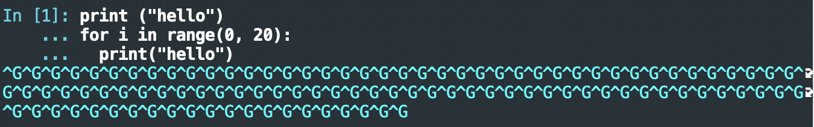

Fix a Problem in Emacs Python/Jupyter setup
Ping Zhou, 2020-03-28
I’ve configured my Emacs with a nice Python and Jupyter environment. I want to use it on my Mac laptop. Recently I noticed this strange issue:
Problem: I send my code to Jupyter using C-c C-c, the Jupyter console shows a bunch of strange “Ctrl-G” (“G”) characters. My code was not executed, and the console seems to be stuck there. I have to press Ctrl-C to get back to shell.

I searched up this problem and it seems to be related to the “shell echo” feature of elpy. An evidence is that if I send the code with python-shell-send-buffer, I don’t see this problem at all.
Solution: To fix this problem, I simply disabled “shell echo” in elpy:
(setq elpy-shell-echo-output nil)
Now I add this in my Emacs configuration and restart Emacs. Type in some Python code, press C-c C-c, and the code is executed in Jupyter console. Works like magic!